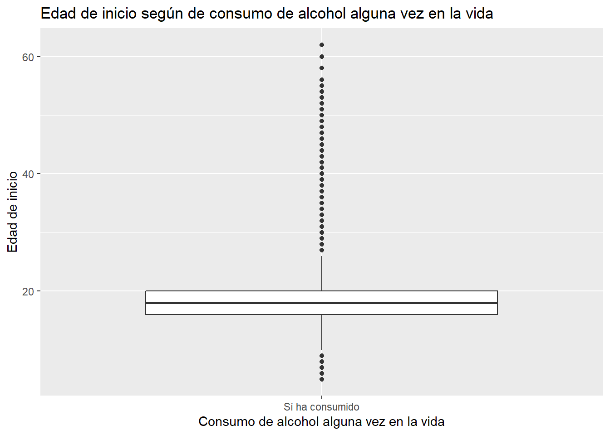
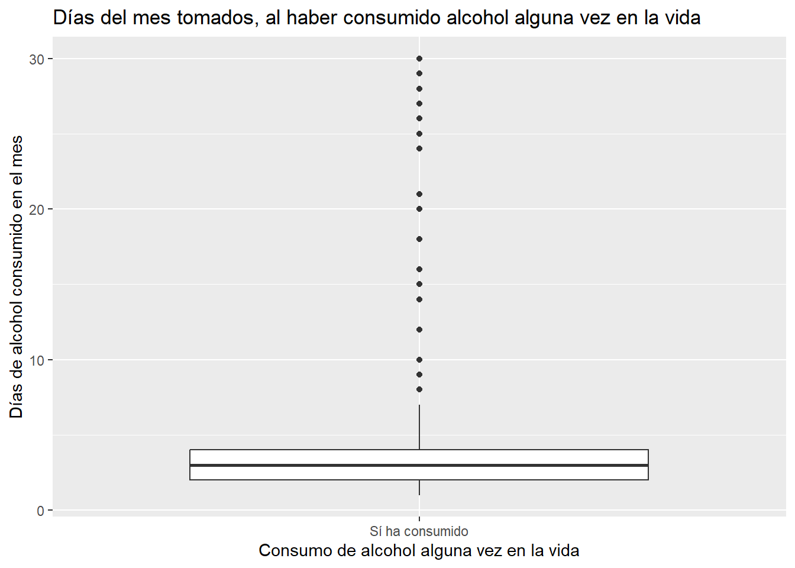
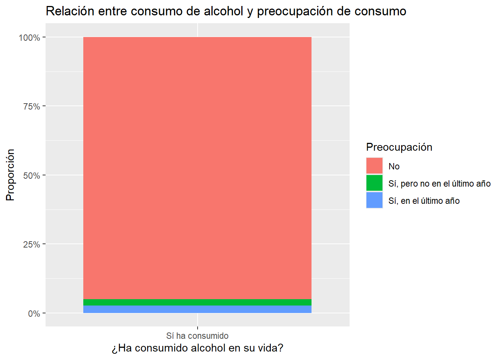

IInstalar los siguientes paquetes si no están presentes. Para hacerlo, se debe crear un nuevo chunk en el documento (Ctrl + Alt + I) y copiar el siguiente código dentro de él: install.packages(c("tidyverse", "ggplot2", "skimr", "haven", "rio"))
IMPORTANTE: Para hacer reproducible este informe, se debe colocar enpg2022.rds en una carpeta llamada “Evaluación 1/” dentro del mismo proyecto.
Evaluación Sumativa N°1 – Reproducibilidad y comunicación de resultados
En esta actividad, cada estudiante desarrollará un informe reproducible y replicable utilizando Quarto (archivo .qmd que debe compilar correctamente a .html). El objetivo principal es aplicar los principios de reproducibilidad, documentación clara y comunicación efectiva de resultados, a partir del análisis de un conjunto de datos real. Para ello, trabajarán con la Encuesta Nacional de Drogas (SENDA).
Lo primero que se hara es primero abrir nuestra base de datos, con el fin de ver que cuantas observaciones y variables tenemos para tener en consideración de este ejercicio. Además es importante remarcar cuales serán las librerias necesarias para poder interactuar con la Encuesta Nacional de Drogas.
Si no se tiene las librerias usar la opción install packages de las siguientes librerias que se trabajaran:
#| label: setup#| include: false#| message: false#| warning: false# Semilla aleatoria para asegurar la reproducibilidadset.seed(123)# Librerias utilizadaslibrary(tidyverse)
── Attaching core tidyverse packages ──────────────────────── tidyverse 2.0.0 ──
✔ dplyr 1.1.4 ✔ readr 2.1.5
✔ forcats 1.0.0 ✔ stringr 1.5.1
✔ ggplot2 4.0.1 ✔ tibble 3.2.1
✔ lubridate 1.9.3 ✔ tidyr 1.3.1
✔ purrr 1.0.2
── Conflicts ────────────────────────────────────────── tidyverse_conflicts() ──
✖ dplyr::filter() masks stats::filter()
✖ dplyr::lag() masks stats::lag()
ℹ Use the conflicted package (<http://conflicted.r-lib.org/>) to force all conflicts to become errors
Usar libreria rio para importar y abrir la carpeta guardada de la encuesta SENDA (Se guardo en carpeta denominada, Evaluación 1)
enpg2022 <-import("Evaluación 1/enpg2022.RDS")
Es por ello que ahora teniendo en consideración se tendran seleccionado las siguientes variables:
oh_1 (¿Ha tomado Ud. alcohol alguna vez en su vida? Variable principal )
oh_3 (¿Qué edad tenía cuando consumió por primera vez alcohol? Variable secundaria 1)
oh_5 (Pensando solamente en los últimos 30 días, ¿cuántos días del mes ha tomado algún tipo de alcohol? Variable secundaria 2)
oh_17 (¿Algún familiar, amigo, médico u otro profesional de la salud ha mostrado preocupación por la forma en que usted consume bebidas alcohólicas o le ha sugerido que deje de beber? Variable secundaria 3).
Estas variables se escogieron por la influencia del alcohol en los roles sociales en el país, y por sobre todo es importante saber si el consumo de este a llegado a niveles preocupantes.
1. Exploración inicial de los datos: revisión de estructura, tipos de variables, detección de valores perdidos, distribución de variables y primeras observaciones relevantes.
Abrir y ver que tipos de variable hay en data_reducida con summary() para remarcar los elementos que hay en la libreria, y con sum y la funcion is.na para ver cuantos NA hay en total por todas las variables.
summary(data_reducida)
OH_1 OH_3 OH_5 OH_17
Min. : 1.00 Min. : 5.0 Min. : 1.000 Min. :0.000
1st Qu.: 1.00 1st Qu.:16.0 1st Qu.: 2.000 1st Qu.:0.000
Median : 1.00 Median :18.0 Median : 3.000 Median :0.000
Mean : 1.43 Mean :21.6 Mean : 6.622 Mean :0.152
3rd Qu.: 2.00 3rd Qu.:20.0 3rd Qu.: 5.000 3rd Qu.:0.000
Max. :99.00 Max. :99.0 Max. :99.000 Max. :4.000
NA's :4679 NA's :11448 NA's :9040
sum(is.na(data_reducida))
[1] 25167
A partir del Summary() y del Sum(), se puede remarcar que en la data_reducida existen 4 variables numéricas, correspondientes a las preguntas seleccionadas del módulo de consumo de alcohol. Asimismo, mediante sum(is.na(data_reducida)) se observa que el conjunto presenta 25.167 valores perdidos en total, distribuidos entre las cuatro variables.
Estos valores perdidos pueden deberse a distintos factores habituales en encuestas de consumo de sustancias, como ausencia de respuesta, saltos lógicos del cuestionario (por ejemplo, personas que nunca han consumido alcohol no responden edad de inicio), o errores de captura. Por ello, es importante considerar estos NA antes de continuar con el análisis, ya que afectarán los cálculos de frecuencias, promedios y asociaciones bivariadas.
2. Limpieza y preparación: tratamiento de valores perdidos, recodificaciones necesarias, creación de categorías si corresponde, y cualquier ajuste que permita un análisis válido y replicable.
Hay variables que tienen resultados extremos por lo tanto se deben transforma en NA para que no afecten el analisis (en el informe de senda los valores 88 y 99 son generalmente valores perdidos). Por lo tanto ahora hay que limpiarlos
Ya teniendo estos datos en consideración es ideal transformar las OH_1 y OH_17 en variables categoricas debido al tipo de respuesta que entregan.
data_reducida <- data_reducida %>%mutate(OH_1 =factor( OH_1,levels =c(1, 2),labels =c("Sí ha consumido", "No ha consumido") ),OH_17 =factor( OH_17,levels =c(0, 2, 4),labels =c("No","Sí, pero no en el último año","Sí, en el último año" ) ) )
Y por sobre todo para no perder el hilo de que es lo que refiere cada variable es mejor cambiarles de nombre para que nos sea más claro en su compresion, aplicamos un glimpse para ver que todos los cambios anteriores esten bien implementados.
consumo_vida edad_inicio dias_consumo_30
Sí ha consumido:12775 Min. : 5.00 Min. : 1.000
No ha consumido: 4648 1st Qu.:16.00 1st Qu.: 2.000
NA's : 31 Median :18.00 Median : 3.000
Mean :18.63 Mean : 4.483
3rd Qu.:20.00 3rd Qu.: 4.000
Max. :62.00 Max. :30.000
NA's :5223 NA's :11600
preocupacion_consumo
No :8002
Sí, pero no en el último año: 184
Sí, en el último año : 228
NA's :9040
skim(data_reducida)
Data summary
Name
data_reducida
Number of rows
17454
Number of columns
4
_______________________
Column type frequency:
factor
2
numeric
2
________________________
Group variables
None
Variable type: factor
skim_variable
n_missing
complete_rate
ordered
n_unique
top_counts
consumo_vida
31
1.00
FALSE
2
Sí : 12775, No : 4648
preocupacion_consumo
9040
0.48
FALSE
3
No: 8002, Sí,: 228, Sí,: 184
Variable type: numeric
skim_variable
n_missing
complete_rate
mean
sd
p0
p25
p50
p75
p100
hist
edad_inicio
5223
0.70
18.63
5.24
5
16
18
20
62
▅▇▁▁▁
dias_consumo_30
11600
0.34
4.48
5.50
1
2
3
4
30
▇▁▁▁▁
A partir de este analisis descriptivo se puede destacar el consumo de alcohol alguna vez en la vida presenta una alta prevalencia en la muestra (73%), mientras que la edad de inicio se concentra principalmente entre los 16 y 20 años, con una mediana de 18, mostrando un patrón de inicio temprano y algunos casos atípicos sobre los 30 años. Entre quienes han consumido, la frecuencia mensual es mayoritariamente baja, con una mediana de 3 días y valores típicos entre 2 y 4, aunque existe un pequeño grupo con consumo intensivo de 15 a 30 días. Respecto a la preocupación externa, la gran mayoría de quienes tienen datos válidos reporta no haber recibido advertencias sobre su forma de beber, mientras que las señales de preocupación—recientes o pasadas—representan porcentajes muy bajos. En conjunto, los datos sugieren un consumo ampliamente extendido, generalmente ocasional y social, pero con un subgrupo reducido que presenta patrones potencialmente problemáticos y que no parece ser reconocido como tal por su entorno.
4. Análisis bivariado: cruce de la variable principal con cada una de las tres variables secundarias, generando al menos:
o Tres gráficos bivariados, uno por cada cruce.
Cruce de consumo_vida y de edad_inicio :
Este cruce corresponde a la relación entre una variable categórica (consumo_vida: ha consumido alcohol alguna vez) y una variable numérica (edad_inicio: edad a la que comenzó a consumir). El uso de un boxplot es adecuado ya que permite comparar la distribución de la edad de inicio entre los grupos definidos por la variable categórica.
El código utilizado fue:
#| label: grafico-edad-inicio#| fig-width: 8#| fig-height: 5#| fig-cap: "Gráfico 1: Distribución de la Edad de Inicio del Consumo de Alcohol"ggplot( data_reducida %>%filter(!is.na(edad_inicio)), aes(x = consumo_vida, y = edad_inicio)) +geom_boxplot() +labs(title ="Edad de inicio según de consumo de alcohol alguna vez en la vida", x ="Consumo de alcohol alguna vez en la vida",y ="Edad de inicio" )

A partir del boxplot se observa que, dentro del grupo que declara haber consumido alcohol alguna vez, los cuartiles 2, 3 y 4 se concentran principalmente en edades inferiores o cercanas a los 20 años, lo que sugiere que la mayor parte de quienes han consumido alcohol comenzaron a hacerlo relativamente temprano. Las edades de inicio sobre los 30 años aparecen como valores más atípicos, indicando que son menos frecuentes dentro de la distribución.
Este patrón muestra una tendencia clara hacia un inicio temprano del consumo, algo consistente con estudios previos sobre consumo de alcohol en la población general.
Cruce de consumo_vida y de dias_consumo_30:
En este cruce, también se empleó un diagrama de caja para observar la relación entre el consumo de alcohol en la vida y la cantidad de días que se bebió en los últimos 30 días. Nuevamente se trabaja únicamente con el grupo que declaró haber consumido, ya que quienes no han bebido no pueden aportar valores válidos en esta variable.
El código es el siguiente:
#| label: grafico-dias-consumo#| fig-width: 8#| fig-height: 5#| fig-cap: "Gráfico 2: Días de Consumo de Alcohol en los Últimos 30 Días"ggplot( data_reducida %>%filter(!is.na(dias_consumo_30)), aes(x = consumo_vida, y = dias_consumo_30)) +geom_boxplot() +labs(title ="Días del mes tomados, al haber consumido alcohol alguna vez en la vida",x ="Consumo de alcohol alguna vez en la vida",y ="Días de alcohol consumido en el mes" )

El boxplot muestra la distribución de los días de consumo de alcohol en los últimos 30 días entre las personas que han declarado haber consumido alcohol alguna vez en su vida. La mediana se ubica en niveles muy bajos (alrededor de 2–3 días al mes), lo que indica que la mayoría de quienes han bebido alguna vez mantienen un consumo infrecuente o esporádico.
Asimismo, los cuartiles inferior y superior (Q1–Q3) están concentrados entre 1 y 5 días, reforzando la idea de que el patrón más común es un uso ocasional. Sin embargo, aparecen varios valores extremos o casos atípicos que alcanzan entre 15 y 30 días de consumo. Estos representan a un grupo reducido de personas que declara beber con mucha más frecuencia durante el mes.
En conjunto, el gráfico evidencia que la mayoría del grupo mantiene un consumo ocasional, pero existe un subconjunto pequeño con niveles de consumo intensivo, lo que sugiere heterogeneidad dentro de los patrones de uso mensual de alcohol.
Cruce de consumo_vida y de preocupacion_consumo:
Este cruce utiliza un gráfico de barras apiladas en proporciones, adecuado para dos variables categóricas. El análisis considera únicamente a quienes han declarado haber consumido alcohol en algún momento de su vida.
El código es el siguiente:
#| label: grafico-preocupacion#| fig-width: 9#| fig-height: 5#| fig-cap: "Gráfico 3: Proporción de Preocupación Externa por el Consumo de Alcohol"ggplot(data_reducida %>%filter(!is.na(preocupacion_consumo)), aes(x = consumo_vida, fill = preocupacion_consumo)) +geom_bar(position ="fill") +labs(title ="Relación entre consumo de alcohol y preocupación de consumo ", x ="¿Ha consumido alcohol en su vida?", y ="Proporción",fill ="Preocupación" ) +scale_y_continuous(labels = scales::percent)

Los resultados muestran que la proporción mayoritaria corresponde a personas que no han recibido comentarios, advertencias ni sugerencias respecto a su forma de beber. Las categorías “Sí, pero no en el último año” y “Sí, en el último año” representan porcentajes muy reducidos respecto del total.
Esto indica que, aunque el consumo de alcohol es altamente prevalente entre quienes declaran haber bebido alguna vez, la percepción externa de riesgo o preocupación por ese consumo es minoritaria. La mayoría no ha recibido señales de alerta por parte de familiares, amigos o profesionales de la salud, lo que sugiere que el consumo declarado podría ser mayormente social u ocasional, o que no se reconoce ni señala como problemático.
o Una tabla de resultados bivariados, donde se resuma la relación:
La mayoría inicia entre 15 y 20 años; mediana en adolescencia tardía; pocos casos atípicos sobre 30.
Consumo mensual mayoritariamente bajo (2–3 días); valores entre 1–5 días; pocos casos intensivos (15–30 días).
Predomina la ausencia de preocupación; advertencias recientes representan proporciones muy bajas.
Conclusiones
Analisis de las variables y de los datos ENPG 2022 sobre el alcohol
En general, el análisis muestra que el consumo de alcohol es una conducta muy extendida en la muestra, ya que la mayoría declara haber bebido alguna vez en su vida. Entre quienes sí han consumido, la edad de inicio se concentra principalmente entre los 16 y 20 años, reflejando un patrón de inicio temprano que coincide con otros estudios nacionales. En cuanto a la frecuencia mensual, la mayor parte del grupo mantiene un consumo ocasional o esporádico, aunque existe un pequeño subconjunto que presenta un consumo intensivo, llegando a 15 o incluso 30 días dentro del mes. Al observar la preocupación externa, se aprecia que la mayoría no ha recibido advertencias o comentarios sobre su forma de beber, lo que puede significar que el consumo declarado es mayormente social o que estos patrones, incluso cuando son más elevados, no siempre son percibidos como problemáticos por el entorno. En resumen, los datos muestran un consumo generalizado pero moderado en la mayoría, junto con un grupo reducido que concentra los niveles más altos de riesgo.
Analisis de la reproducibilidad del informe
Uno de los aspectos que intenté implementar para que este informe sea realmente reproducible es mantener una estructura clara y fija del proyecto, donde los datos estén guardados siempre en la misma carpeta (“Evaluación 1/”) y el código apunte directamente a esa ruta. Además, cargué explícitamente todas las librerías necesarias al inicio, de forma que cualquier persona que abra este archivo tenga disponible el mismo conjunto de paquetes. También dejé documentado cada paso del proceso—importación, selección, limpieza, recodificación, análisis descriptivo y análisis bivariado—tanto en texto como en código, de manera que se pueda seguir el flujo completo sin perderse. La idea es que cualquier usuario pueda ejecutar este archivo desde cero y obtener exactamente los mismos resultados. Finalmente, incluir sessionInfo() permite dejar un registro del entorno y de las versiones de los paquetes utilizados, lo que es fundamental para evitar diferencias entre sistemas o configuraciones de R.
# Se aplica session info para indicar si la reproducibilidad fue bien aplicadasessionInfo()